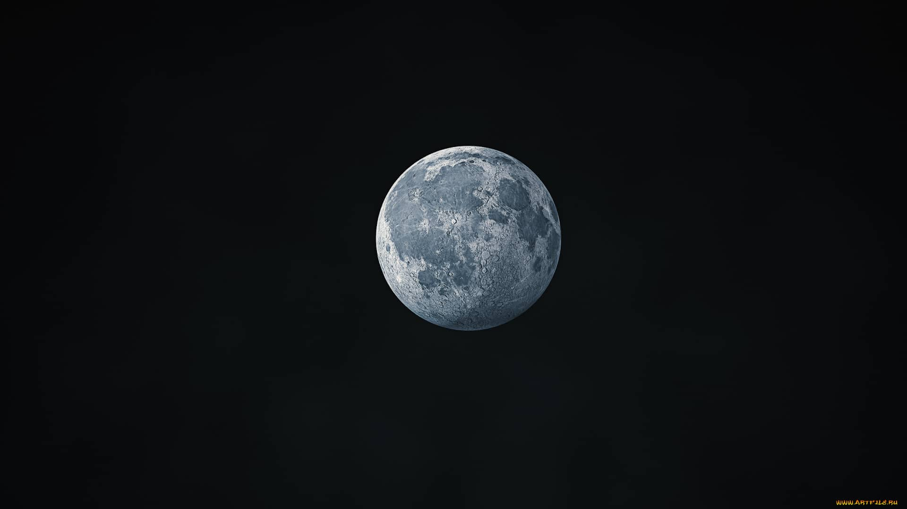

How to take picture of moon if you are not a Samsung owner
Friday, 13 May 2023
While Samsung's Galaxy phones are renowned for their moon photography modes, you don't need a special phone to capture the moon. Here are some tips for taking lunar photos on any camera.
Taking a picture of the moon can be challenging if you don't have a high-end smartphone with an advanced camera like the Samsung Galaxy series. However, it is still possible to capture decent photos of the moon with a regular smartphone or digital camera. Here are some tips to help you:
Step 1: Use a Tripod

Since the moon is far away, even the slightest movement can make your photo blurry. Use a tripod to keep your camera steady. If you don't have a tripod, stabilize your camera on a table, chair or other surface. You can also use a selfie stick or monopod.
Step 2: Zoom in on the moon

Most smartphone cameras and basic digital cameras have limited optical zoom. Use the digital zoom to zoom in as much as possible while still keeping the moon sharp and clear. The more you zoom in, the harder it will be to keep the camera steady. So balance the zoom level based on how stable you can keep the camera.
Step 3: Frame the moon carefully

Don't just point and shoot. Frame the moon in an interesting way. You can include landscape details in the foreground to give a sense of scale. Or frame the moon rising over the horizon. Play around with different compositions to get an original and compelling shot.
Step 4: Adjust camera settings

If your camera allows it, adjust the ISO to a lower number, around 200 to 400. This will make the image less noisy. Also, use the manual mode to adjust the shutter speed. Start with around 1/60 to 1/125 sec. Take some test shots and adjust as needed. The lower the shutter speed, the more light you'll capture. But go too low and the photo will be blurry.
Step 5: Touch up your photo

Use an editing app like Snapseed or VSCO to touch up your photo. You can adjust brightness, contrast, sharpness and saturation. You can also crop the photo for an interesting composition and convert to black and white for a dramatic effect. With some editing, your moon photo can go from good to great.